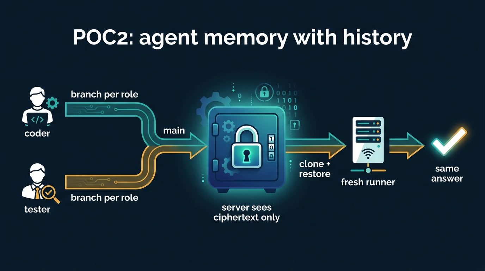
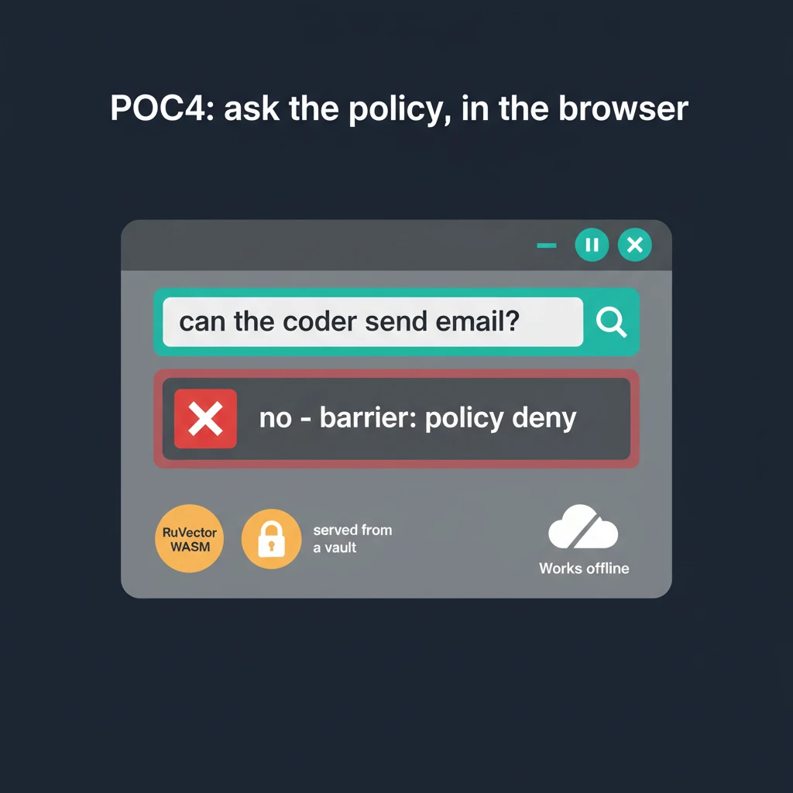

Built on 14 Oct 2026 in one Claude Code session, from the pack in the repository
Priority order as in the brief. Every table and hash below is loaded from the files the runs produced; the same files are in the public vault.
| POC | Claim | Status | Where |
|---|---|---|---|
| 1 | A Ruflo swarm with an ABP behaves differently from one without; receipts are hash-chained and valid | runs, local and CI | poc/poc1-abp-to-ruflo-policy |
| 2 | Agent memory in a vault survives an ephemeral runner, with history per role, encrypted | runs locally; CI jobs wired, need secrets | poc/poc2-agent-memory-in-vault |
| 3 | ABP rows compile into RVM capability rights, with the withheld list and gaps | runs | poc/poc3-abp-to-rvm-caps |
| 4 | A page served from a vault answers policy questions offline with RuVector WASM | runs; in the vault and on this site | poc/poc4-browser · live |
| 5 | A MetaHarness scaffold's settings render as an ABP and diff against ours | runs | poc/poc5-metaharness-abp |
| 6 | A real Ruflo session in Claude Code recorded to the private vault | runbook; needs an interactive terminal | poc/poc6-swarm-run-in-vault |
Input. abp/examples/ruflo-sparc-swarm.abp.json: a queen and five worker roles, 36 rows. trace.json: 11 actions a SPARC swarm would emit (file.write, test.run, repo.push, network.fetch, email.send, credential.read, model.call, deploy).
Compile. compile.mjs maps each row to a PolicyRule: effect from the mandate, actions from abp/mapping.json, principal = role, resources = instances, priority deny 100 / approval 90 / allow 10, and reports gaps.
Run. run.mjs builds two engines, legacy (no rules: what Ruflo does on a fresh project) and enforce (all rules plus one budget), evaluates every trace action in both, exports the enforce engine's state and verifies both ledgers.
npm run abp:gate # ABP gaps: 0
npm run poc1 # → out/poc1/report.{json,md} rules.json state-abp.jsonAcceptance. ≥1 action allowed in legacy and denied under the ABP (3: email.send, network.fetch.world, tester's file.write, plus credential.read), ≥1 approval_required (2: repo.push, deploy), ledger valid. All met; outputs in the vault under poc1/.
flowchart TB A["abp.json
6 roles · 36 rows"] --> C["compile.mjs"] M["mapping.json
primitive → action strings"] --> C C --> RULES["36 PolicyRule + 1 budget"] RULES --> E["AgenticPolicyEngine
mode: enforce"] T["trace.json · 11 actions"] --> E T --> L["AgenticPolicyEngine
mode: legacy"] E --> R["report.json
side by side"] L --> R E --> S["state-abp.json
receipts, verifyLedger() valid"] R --> V[("ruv-pocs-public/poc1/")] S --> V
{ "id": "abp:coder:send.message.world", "effect": "deny",
"actions": ["email.send", "message.send"], "principals": ["coder"],
"priority": 100,
"description": "barrier: agents draft, a person sends | policy deny + no mail credential in the sandbox" }All 36: rules.json.
Evidence: evidence/poc1-run.txt, evidence/ruflo-policy-legacy.json (the CLI's own answer on a fresh project). Engine: @claude-flow/security/policy/index from ruflo 3.56.10.
Write phase (per role). ruflo memory init, memory store a lesson in the role's namespace, memory list to a text file. Clone the memory vault (key on stdin), create branch mem-<role>-<run>, copy the durable stores (.swarm/memory.db, .swarm/agentdb-memory.db, .claude/memory.db, ruvector.db) and the list under memory/<role>/, commit, push, switch to the default branch, merge, push.
Read phase (fresh runner). Clone the vault into an empty directory, copy each role's files into a fresh folder, run ruflo memory list -n <role>. Same entries come back.
ROLE=coder bash poc/poc2-agent-memory-in-vault/run.sh write
ROLE=tester bash poc/poc2-agent-memory-in-vault/run.sh write
rm -rf .vault-memory && bash poc/poc2-agent-memory-in-vault/run.sh read
sgit history log --oneline -n 10 # inside .vault-memoryAcceptance. Two writers, one fresh reader, same answer; history has a commit per role; the server never sees plaintext (sgit encrypts client-side, AES-256-GCM). Met locally; in CI the poc2-write matrix and poc2-read jobs run on separate runners once the secrets exist.
Why it matters. Per RuVector's own README (“Security and governance”): its witnesses and hash-linked logs “do not encrypt memory content”; “collections and metadata filters organize memory; they are not a complete authorization boundary”; and “a delete from the live store does not automatically remove copies in snapshots, branches, replicas, exports”. RuVector already has snapshots and copy-on-write branching (rvf derive). The vault complements them: encryption on the client, a history shared across machines, and a vault that is deleted with the run.

loading…Evidence: evidence/poc2-run.txt, evidence/poc2-history.json. Two things we learned: a vault with zero commits cannot be cloned (seed it with a README), and sgit's default named branch is called current, not main.
abp_to_rvm.py maps each mandated primitive to RVM rights through abp/mapping.json and prints, per role, the token's rights, the rows that are reachable but not mandated (with their barrier), and the gaps. No RVM build is needed: RVM is bare-metal Rust, and the point tonight is the table.
npm run poc3 # → out/poc3/rvm-caps.mdReading. RVM rights are coarser than ABP primitives: EXECUTE covers both a sandboxed test run and an email send. The ABP keeps the distinction; the token alone cannot. That is the argument for compiling tokens from a mandate.
poc/poc4-browser/index.html loads the vendored @ruvector/wasm (verified: init(), VectorDB(dim,'cosine',true), insert, search, hnswAvailable() true, version 2.3.1), embeds every ABP row with a deterministic 128-dimension bag-of-words hash (no model, no network), and answers questions like "can the coder send email?" with the matching rows, their mandate, reason and barrier. Below the search it renders POC1's decision table and the ledger status from data/report.json.
npm run poc4:build # out/app/{index.html, vendor/ruvector_wasm*.{js,wasm}, data/{abp,report}.json}
# in the vault: app/ ; then
sgit publish --visibility public --yes && sgit vault serve --openAcceptance. Works offline after load; the numbers and hashes on screen come from POC1's outputs. Met. The same folder is served on this site and from the vault.

Scaffold a harness with the agentics template for Claude Code, read what it actually generated, render each permission setting as an ABP row, and diff against our ABP for the coder role, both ways. Then score this repository with MetaHarness's own scorecard.
npx metaharness rm-agentics --template vertical:agentics --host claude-code --no-darwin --target out/poc5/harness
node poc/poc5-metaharness-abp/harness-to-abp.mjs out/poc5/harness abp/examples/ruflo-sparc-swarm.abp.json coder out/poc5
npx metaharness score . --json > out/poc5/score.jsonFinding. The scaffold emitted 18 files with a permissions allow/deny list, two MCP servers and prose rules. It did not emit the governance policy document, deny-by-default statement, timeouts, call limits or audit flag that the package README describes for harnesses. The diff shows 8 of our coder rows the harness is silent on (send.message.world, send.endpoint.world, create.record.world among them) and 2 it covers (execute.process.self, read.credential.host).
Scorecard of this repo (metaharness score): loading…
Ruflo's policy administration (policy init|rule|budget) refuses to run without an interactive terminal, by design. We did not fake a TTY; the brief's rule is that a security control is never weakened to make a demo work. So POC6 is a runbook for a person at a terminal, with every other step automated.
claude mcp add ruflo -- npx -y ruflo@3.56.10 mcp start # subcommands verified: start|status|tools|exec
claude mcp listPlugin route, from public guides, unverified: /plugin install ruflo-core@ruflo.
npx ruflo policy init --mode observe
npx ruflo policy --help # then add rules from out/poc1/rules.json by handnpx ruflo swarm start -o "add a unit test for poc/poc1-abp-to-ruflo-policy/compile.mjs" -s developmentnpx ruflo hooks session-end
mkdir -p out/session && cp -R .claude-flow/policy out/session/policy && cp .swarm/*.db out/session/ 2>/dev/null
VAULT_KEY="$SGIT_VAULT_KEY_MEMORY" scripts/vault_write.sh out/session "sessions/$(date +%F)" "poc6: recorded session" .vault-memory
npx ruflo daemon stopOne session folder in ruv-pocs-memory with its receipts; npx ruflo policy status shows a valid ledger. Cowork alternative: clone the vault in a Cowork session and read the record there; agents draft, Dinis sends.
Read key published on purpose. Contents: README.md, app/ (the browser app), poc1/ (report, rules, receipts), runs/<run>/ (everything each run produced, including the POC3 table and the POC5 scaffold).
Published: vault id okbiml09, read key in data/vault-public.json (read-only; the write key stays private).
Private. memory/coder/, memory/tester/ with their DB files and list dumps; sessions/ for POC6. History: init → coder learned → tester learned.
pip install sgit-ai==0.21.0
sgit clone --read-key <hex> <vault_id> ruv-pocs-public
cd ruv-pocs-public && sgit ls && sgit cat poc1/report.md